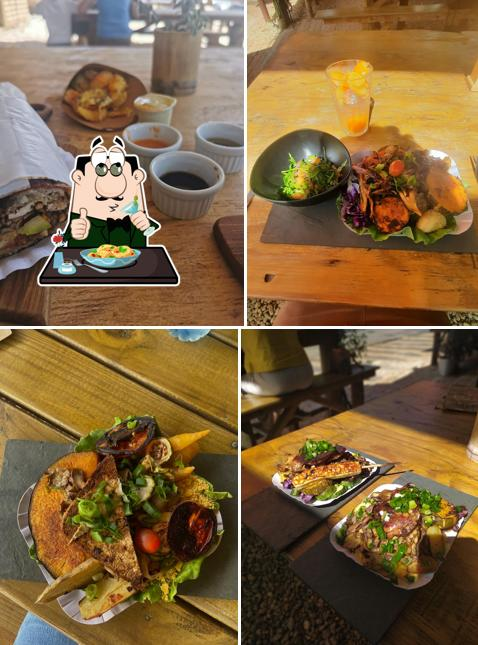
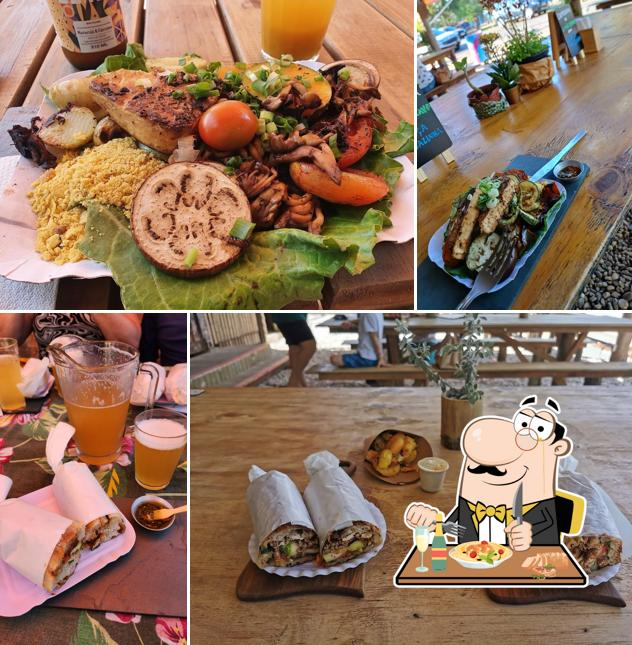
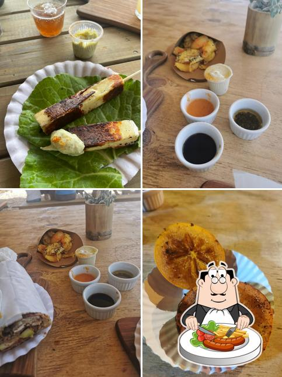
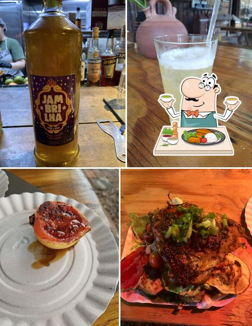

Sanduba de carne de porco desfiada
Lentamente desfiada, com os molhos da casa pra escolher.
Barão Geraldo · Campinas
O ReÚne é o quintal do Barão: comida de verdade na chapa, molhos artesanais com pimenta que vira assunto, e palco de quarta a domingo. Comida e cultura no mesmo endereço.
4,7 no Google · ~305 avaliações

Destaques que o público elogia nas avaliações. Ticket médio: R$ 20–40 por pessoa. Cardápio completo na casa e pelo WhatsApp.
A identidade da casa: rock, reggae e tributos no quintal.
A programação da semana sai primeiro no @reune_comida_cultura. Chega cedo, senta na mesa de madeira e deixa o dia terminar no baixo.




| Segunda | Fechado |
| Terça | Fechado |
| Quarta | 11h – 22h |
| Quinta | 11h – 22h |
| Sexta | 11h – 22h |
| Sábado | 11h – 22h |
| Domingo | 11h – 22h |
Ao ar livre, aceita cartões, sem reserva, acessível — com estacionamento gratuito na rua.
WhatsApp e encomendas: (19) 99565-9012 · @reune_comida_cultura